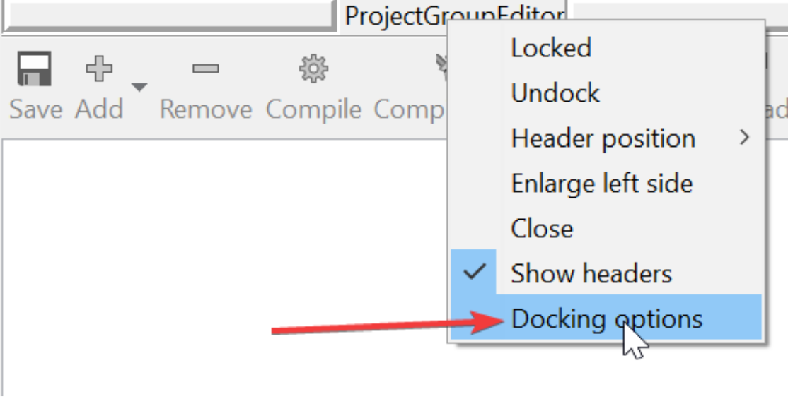
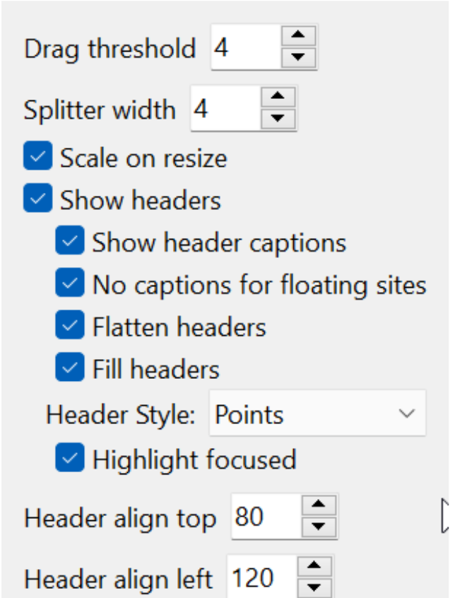
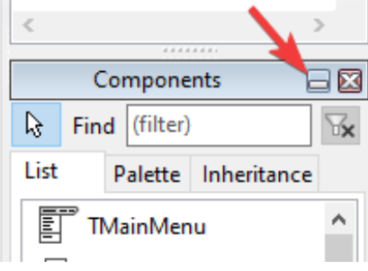
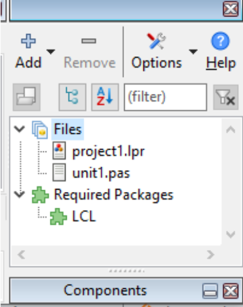

Clique com o botão direito sobre as linhas de docagem e vá em Docking options(Opções de Ancoragem):

Então aparecerá a janela abaixo que talvez precise mudar para corresponder mais a sua necessidade, mas atenção que algumas dessas opções podem não estar presentes no Lazarus 2.0.12:

Multiline Tabs: Quando a quantidade de tabs de uma dock for maior que a largura do painel container então teremos um side-scrolling, mas se ativarmos essa opção uma nova tab aparecerá numa segunda linha abaixo e evitará o side-scrolling. Às vezes isso é bom para painéis que usamos muito e evitamos o side-scrolling, mas a estética fica bagunçada. Ligue-a e se não gostar desligue-a. Eu estou usando desde sempre “desligada”. Algumas opções como “minimizar” não são encontradas no Lazarus 2.0.12, mas quando elas aparecerem para você, as achará muito úteis:
Opção para minimizar (indisponivel no Lazarus 2.0):

Isso mesmo, um botão de minimizar para que temporariamente outras docas ganhem mais altura:

Inclusive essa é a forma que mais uso, a paleta de componentes lateral minimizada e maximizo apenas quando não lembro direito o nome do componente ou em qual contexto ele foi colocado.